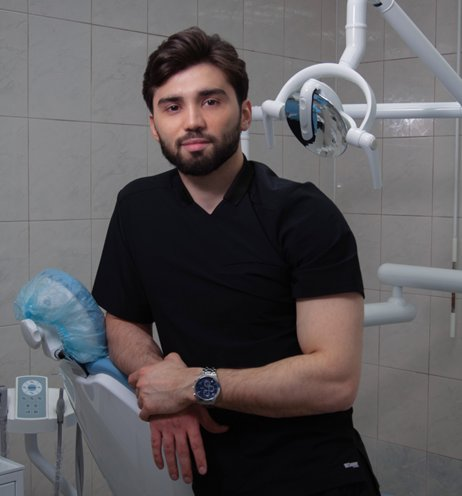
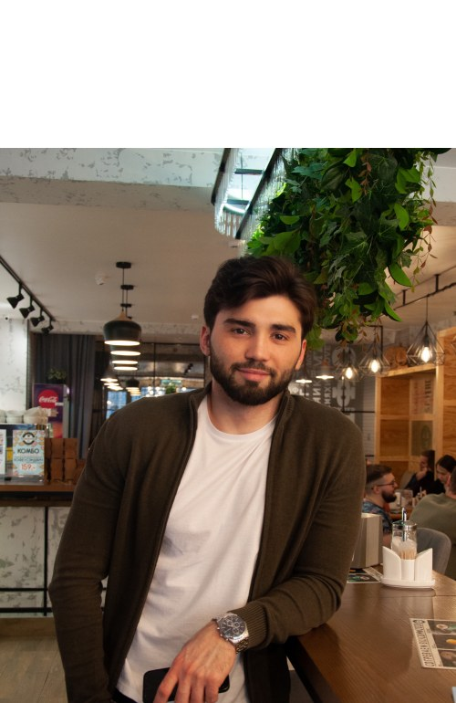
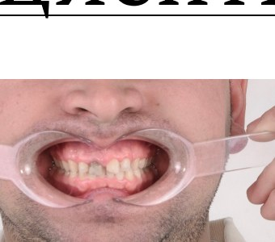

Гигиена полости рта
Профессиональная чистка, удаление камня и налёта, профилактика кариеса и заболеваний дёсен.
СТОМАТОЛОГИЯ · МОСКВА
Битиев Байсангур — стоматолог-ортопед
Эстетическое восстановление зубов по мировым протоколам. Цифровое планирование, микроскоп, гарантия 2 года.


Меня зовут Битиев Байсангур, я стоматолог-ортопед из Москвы. Оказываю полнофункциональное эстетическое восстановление зубов, ставлю коронки и виниры, а также моя команда оказывает весь спектр стоматологических услуг: имплантация, профилактика кариеса, ортодонтическое лечение на брекетах, все виды протезирования зубов, отбеливание и гигиена.
Я родом из горного села Элистанжи, что в Чечне. Мы с семьёй переехали в Барнаул, когда мне было 2 года. Там я вырос, закончил школу и медицинский университет, выбрав путь стоматолога.
С юности всегда искал способы развиваться и быть самостоятельным. Даже будучи студентом, старался познать все тонкости стоматологии: я бесплатно ассистировал именитым докторам в городе и дежурил в разных стационарах, чтобы научиться правильно взаимодействовать с пациентами.
После окончания университета в 2019 году было решено переехать в Новосибирск, чтобы поступить в ординатуру по специальности стоматолог-ортопед. Я понимал, что в городе-миллионнике больше возможностей освоить мировые протоколы.
Я устроился в самую известную клинику Новосибирска с собственным учебным центром, пройдя жёсткий отбор, который прошли только единицы. Освоил работу с микроскопом, начал вести счёт пролеченных зубов — поставив цель 1000 за год. Сейчас план перевыполнен в 6 раз.
Весной 2022 года я переехал в Москву. Моя цель — помочь людям жить лучшую жизнь через здоровую и красивую улыбку.
«Стоматология — это искусство и наука одновременно. Каждое лечение — акт создания гармонии между здоровьем и эстетикой.»— Dr. Baisangur Bitiev
Высокоэстетичные виниры, современные технологии для безболезненного лечения и полный спектр стоматологических услуг команды.
Профессиональная чистка, удаление камня и налёта, профилактика кариеса и заболеваний дёсен.
Высокоэстетичные виниры и люминиры для коррекции формы, цвета и дефектов зубов.
Циркониевые коронки — прочность, долговечность и естественный вид. Гарантия 2 года, служба 15+ лет.
Лечение дисфункции ВНЧС, болей в челюсти, бруксизма. Восстановление правильного прикуса.
Профессиональное отбеливание безопасными системами с контролируемым составом.
Дентальная имплантация, биосовместимые импланты, компьютерное планирование.
Современная стоматология делает лечение более эффективным, безопасным и комфортным для пациентов.
Почему стоит доверить свою улыбку именно мне?
Современные методики и материалы проверенных фирм для высококлассного результата.
Индивидуальный план на всех этапах: от диагностики до последующего наблюдения.
Всегда на связи. После приёма можно написать по любым вопросам.
Гарантия на коронки и виниры — 2 года. Срок службы — более 15 лет.
Реальные случаи из практики. Перетащите ползунок, чтобы сравнить «до» и «после».


до послеПациент ударился передними зубами ещё в юности — зубы сильно пострадали, он стеснялся улыбаться. Восстановление циркониевыми коронками и винирами, исправление шести зубов в зоне улыбки, корректировка десны. Работа заняла около месяца.
Мужчина, инженер, 64 года. Долгие годы откладывал визит к стоматологу: сильный износ зубов, потемнение эмали, недостаток нескольких зубов. Санация, импланты из биосовместимого материала, циркониевые коронки. Работа продолжалась 9 месяцев.

Однажды он попал в серьёзную аварию. Удар пришёлся в область лица: сломана верхняя челюсть, раздроблены передние нижние зубы, смещение всего зубного ряда. Врачи установили шины — отцу пришлось полгода питаться через трубочку. Он смирился с дискомфортом и жил с этим до 54 лет.
Когда я начал свой путь в стоматологии, я дал себе обещание помочь ему вернуть красивую и здоровую улыбку.
Отец снова стал широко улыбаться. Это была не просто медицинская работа — история о благодарности и о том, как знания могут изменить жизнь близкого человека.
В стоматологии много мифов, которые вводят пациентов в заблуждение.
Если зубы не болят — они здоровы
На начальной стадии кариес не болит. Узнать о проблемах можно только при осмотре — минимум раз в полгода.
Чем жёстче щётка, тем лучше
Жёсткие щётки могут испортить эмаль. Важны количество и плотность щетинок, а не жёсткость.
Сладкое вредно для зубов
От частоты потребления зависит pH-среда во рту: она становится кислой, зубы слабеют и быстрее портятся.
Избыток фтора вреден
В большом количестве фтор ведёт к флюорозу. В нормальных дозах — помогает предотвратить кариес.
Зубы мудрости всегда удаляют
Если они правильно растут и не вызывают дискомфорта — их можно оставить, но нужно следить за состоянием.
Отбеливание вредно
Современные системы с контролируемым составом безопасны при профессиональном проведении.
Лечение всегда дорого
Визиты 2 раза в год помогают избежать дорогого лечения. Раннее лечение кариеса — быстрое и недорогое.
Здоровая улыбка — прежде всего отношение самого человека к своему здоровью.
Чистите зубы 2 минуты утром и вечером; мягкая или средняя щетина; меняйте щётку каждые 2–3 месяца; дополняйте нитью или ирригатором.
Сократите сахар — сладости и газировки создают условия для кариеса. Больше кальция и фтора: молочные продукты, рыба, орехи, зелень.
Посещайте стоматолога 2 раза в год. Профессиональная чистка удаляет камень, а ранняя диагностика делает лечение легче и дешевле.
Удобнее всего написать в Telegram — отвечаю быстро и подробно.
@BaisangurB Записаться на приём